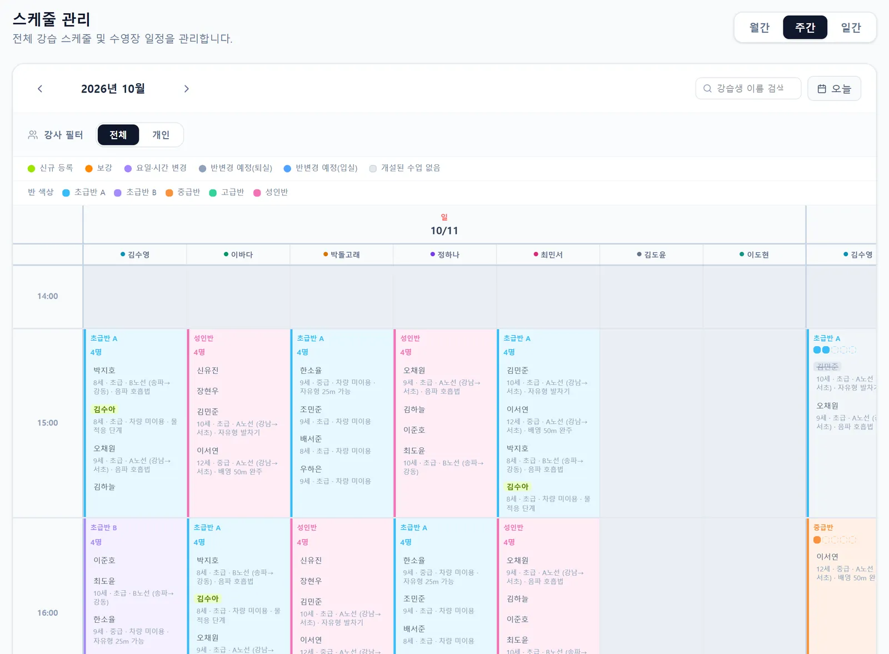
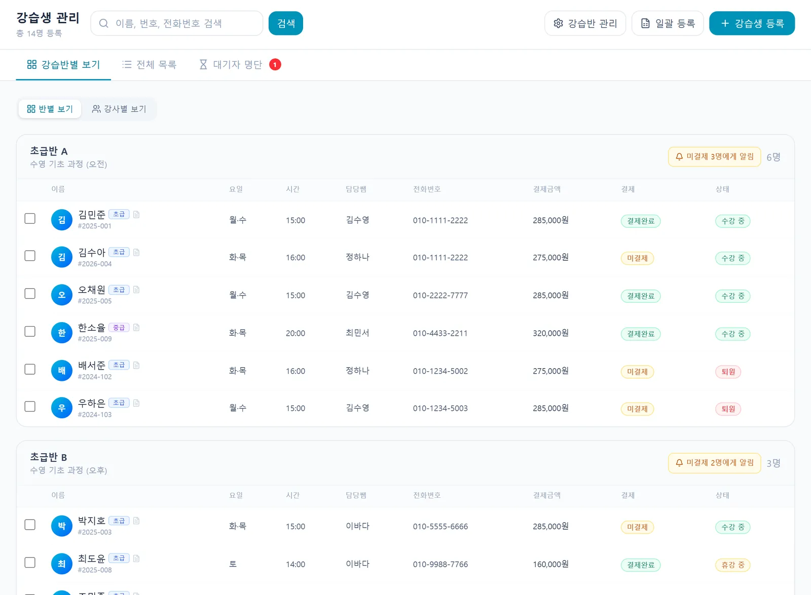

현장에서 들은 이야기
이런 불편, 겪고 계시죠
레슨 시간표관리. 보강 및 스케쥴 변경, 관리 등이 아날로그 식으로 진행되고 해서 불편했어요.
수영 강사 · 서울 강남구 · 설문 응답수기 출석부.
수영 강사 · 경남 창원시 · 설문 응답이렇게 사용해요
네 단계면 끝나요
- 강사·반 등록
강사별 색상, 1타임 정원, 반별 정원과 수강 조건을 정해요.
- 강습생 배정
반·강사·요일·시간을 고르면 정원을 확인해 배정해요.
- 스케줄 확인
주간·월간·일간 보기와 강사·분류 필터로 원하는 수업만 봐요.
- 수업 칸에서 바로
명단, 정원, 출결, 보강, 차량 등하원 정보를 한 번에 확인해요.
강습생 정보도 한 곳에
반별·강사별·전체 목록으로 보고 이름·번호·전화번호로 검색해요. 학생 상세에서 반 등록, 휴강, 복귀, 퇴원, 레벨 테스트까지 처리해요.
- 반별·강사별 보기
- 이름·번호·전화번호 검색
- 레벨 테스트 기록

출석부는 강사 앱으로
강사는 앱에서 오늘 수업 명단을 보고 출석을 정정하고, 진도와 특이사항을 남겨요. 종이 출석부를 옮겨 적을 필요가 없어요.
- 오늘 수업 명단
- 출석 정정
- 진도·특이사항 기록

쓰던 엑셀 그대로 옮겨요
회원명부 엑셀·CSV를 올리면 성명, 연락처, 생일, 성별, 주소를 자동으로 인식해 한 번에 등록해요.
- 엑셀·CSV 일괄 등록
- 컬럼 자동 인식
- 대기자 명단 관리
#01정원 한눈에
#02강사별 색상 스케줄
#03종이 출석부 없이
자주 묻는 질문
궁금한 점
한 학생을 여러 반에 등록할 수 있나요?
네. 학생 상세에서 반을 추가로 등록하면 스케줄과 차량 명단에 모두 반영돼요.
휴관일이나 특강 일정도 표시되나요?
휴관일, 대체수업일, 의무보강일과 공지·이벤트·메모를 달력에 함께 표시해요.
강사는 자기 수업만 보나요?
강사 앱에서는 자기가 맡은 수업과 학생 위주로 보여요.
지금 쓰는 엑셀을 옮길 수 있나요?
회원명부 파일을 그대로 올리면 자동으로 인식해 옮겨요.
스케줄·정원 관리, 30일 동안 무료로 써 보세요
강습생 수 제한 없이 모든 기능 · 초기 세팅 무료
화면은 SwimSync 체험용 예시 데이터로 찍었어요. 실제 이름·금액이 아니에요.